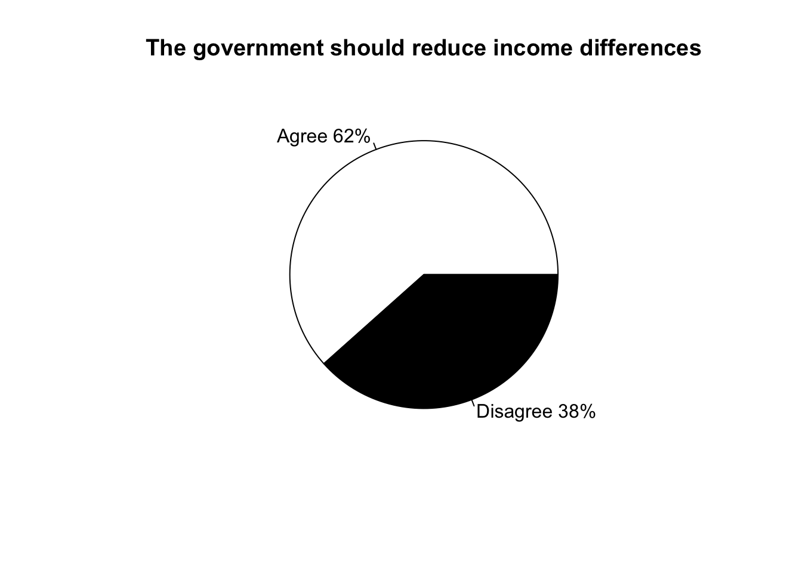
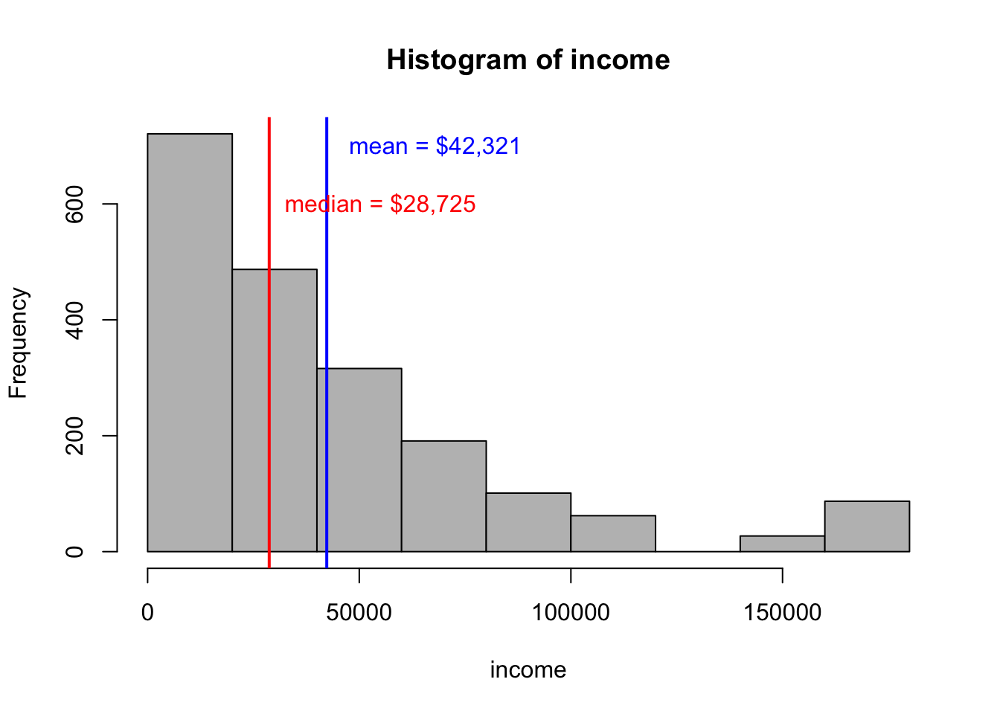
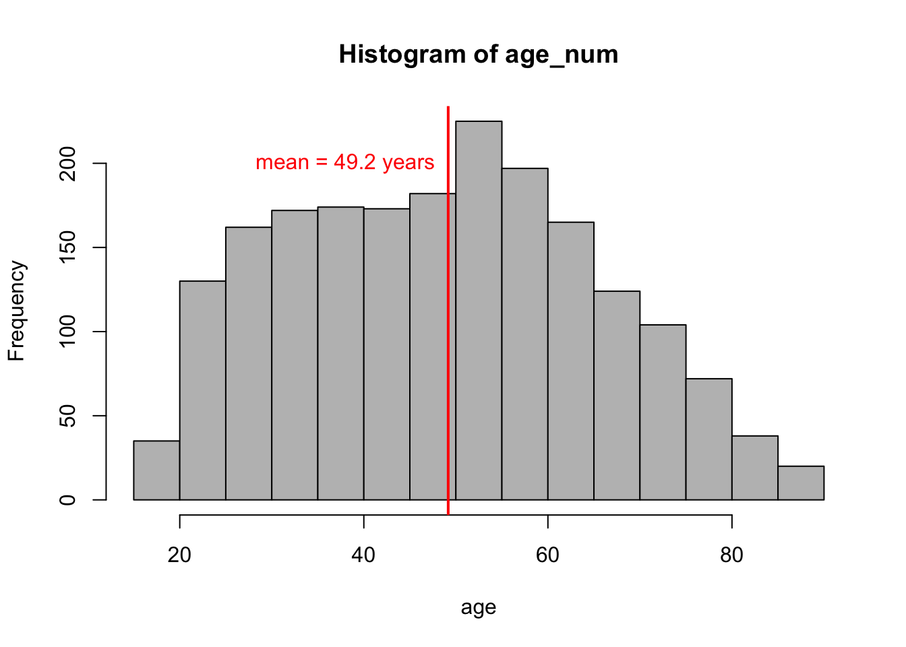
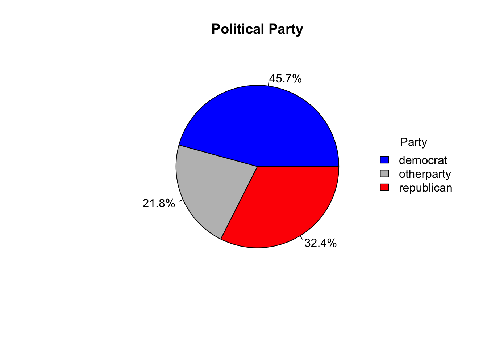
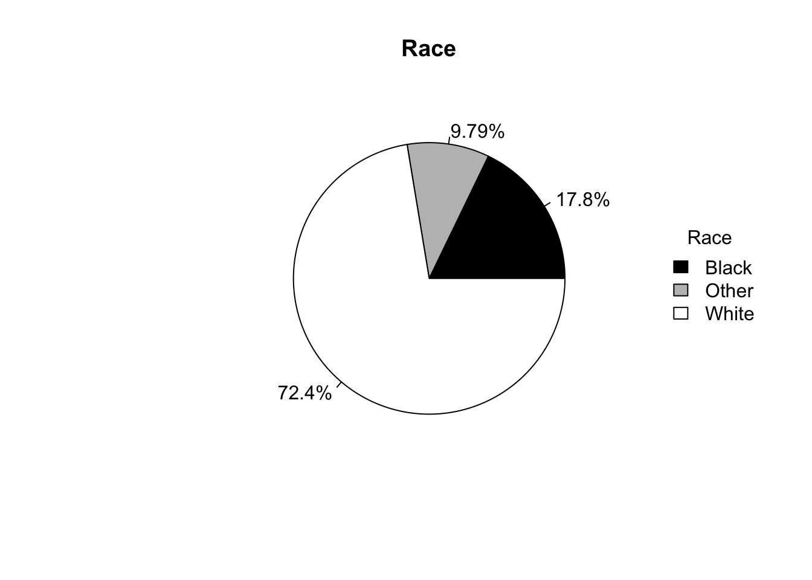

Income inequality is on the rise in the United States, where the gap between the wealthiest “one percent” and the much larger working classes is growing at an unprecedented rate. In 1980, the bottom half of the income distribution brought in 20% of total income; in 2014, their share had fallen to 12% (Belsie, 2018). Today, the income gap has reached its highest point since the Great Depression of 1928 (Pew Research Center, 2018).
This escalating inequality can be attributed to the rate of income growth being much faster at the top of the income distribution than at the middle or the bottom (Sammartino, 2017).The mean pre-tax income per person in the bottom 50% of the income distribution remained static around $16,000. Meanwhile, for the top 1% of earners, income has increased dramatically since 1980. Back then, the income of the top 1% was 27 times the income of the bottom 50%; today, this figure has tripled to 81 times (Belsie, 2018).
This rise in income inequality over the past three plus ia paradoxical considering increasing government spending on public programs like Social Security, Medicare, and Medicaid during this time period. Among all federal programs, these transfer programs are well known for providing the largest before-tax income supplements for low- and middle-income households. This gap has also continued to increase despite income taxes being more progressive than they were in 1980.
Hence, in the face of several evidently failed efforts to close the income gap, the question stands as to whether the U.S. government should be doing more to reduce income inequality. Disagreements about this topic underlie policy debates on important issues taxation and welfare, and the significance of this question only grows as the gap continues to as well.
Interestingly, survey data show that most Americans lack understanding of just how glaring this income gap is. In a 2011 study by Norton and Ariely, respondents from all demographic groups vastly underestimated the current level of wealth inequality in the U.S. On average, those surveyed believed that the wealthiest fifth of Americans held about 59%, while the actual number was at that time around 84%.
Recent polling results also show that 66% of Americans supports raising taxes on high earners (Newport, 2011). The principles that underlie higher taxes for the wealthy are part of a larger ideology that attempting to reduce inequality by way of taxation and welfare programs is a responsibility of government. Interestingly, results from a 2011 Gallup Poll show that most Americans oppose the government actively reducing the income gap, yet support raising taxes on high earners and expanding programs like Medicaid. This curious contradiction engenders interest about agreement among Americans that government has a legitimate role in reducing income inequality.
Most literature on this topic suggests a rather surprising level of consensus across all demographic groups regarding the optimal level of wealth inequality for our country. For instance, you would expect that wealthier people would show stronger aversion to a more equal distribution of wealth than would poorer people. In reality, all groups, from the bottom to the top of the income distribution, desired a more income equality than what they perceive there to be at present. All groups also, however, desired some level of inequality. Additionally, 54% of low-income people and 49% of middle-income people see the income gap as a big “problem” problem, only 36% of high-income people do. In fact, 33% of high-income group said the income gap was either a small problem or not a problem (DeSilver, 2013).
These opinions may stem from how fair people consider the country’s economic system to be to different groups. Pew research found that low- and middle-income people were more likely to say the system favors the wealthy. Even so, 52% of high-income people agree (DeSilver, 2013).
Norton and Ariely (2011) also found much more consensus than disagreement across political parties in their desire for more income equality, which may highlight a “normative” standard among Americans for the distribution of wealth, despite glaring dissent over related policies such as those that guide taxation and welfare. Again, a Gallup Poll (2011) showed that support for raising taxes on high earners is strong among both Democrats and Republicans, though support is stronger among Democrats. This result aligns with each party’s values. General liberal values posit that high earners pay their “fair share” in supporting the public resources through progressive taxation. Meanwhile, general conservative values consider government intervention an intrusion that risks stifling innovation and the free market.
Again, these opinions could be tied to perceptions of fairness in the U.S. economic system. While 55% of Republicans say the economic system is fair to most people, 75% of Democrats and 63% independents say it favors the wealthy. Furthermore, 61% of Democrats and 50% of independents think the income gap is a very big problem, whole only 28% of Republicans did (DeSilver, 2013). These results accurately reflect the distribution of party values across the political spectrum.
The issue of racial inequality is inextricably tied in the history and perpetuation of income inequality in the United States. The huge amount of literature that supports the existence of racial economic inequality shows that we are a long way from repairing the vestiges of institutional racism in the U.S. Over 50 years after the Civil Rights Act, income disparities between black and white family remain alarming close to what they were in 1968. From 1968 to 2016, even though racial disparities in family income rank narrowed significantly, this effect was “negated by changes to the national income distribution that resulted in rapid income growth for the richest—and most disproportionately white—few percentiles of the country combined with income stagnation for the poor and middle class” (Manduca, 2018). In terms of average income, the black households earned 61% of what white households earned in 2016 (Wilson, 2018). In light of these glaring disparities, race is an inevitable factor in perception of income inequality and related policy.
Research regarding how age influences perceptions and aversion to income inequality is extremely limited. We do know, however, that inequality is much lower for younger households than for older households (Pew Research Center, 2018). This data may suggest that income and age interact in predicting opinion on this issue, such that older households with high income are significantly less similar to older households with low income than are young households with high income and young households with low income. Then again, it could simply be that young people across the income distribution are more open to income inequality than their senior counterparts because they undeniably tend to be more left leaning and progressive in general (Pew Research Center, 2018).
A culminating theme throughout these somewhat confusing results is that Americans exhibit a general disconnect between their attitudes toward economic inequality and their public policy preferences. In light of this contradiction, it may be interesting to examine how Americans respond when asked directly whether or not the government should be involved in reducing income inequality. This more pointed, direct prompting may explain the disconnect between attitudes toward inequality and policy preferences.
In the General Social Survey, respondents were asked whether “the government in Washington ought to reduce income differences between the rich and the poor, perhaps by the raising taxes of wealthy families or by giving income assistance to the poor,” or if “the government should not concern itself” with reducing this difference. I will examine the results of this survey to see how opinions differ across Americans based on income, political party, race or age.
Essential question: Do Americans think the government should reduce income differences? Does this opinion vary by income, political party, race, or age?
Ultimately, this question holds numerous far-reaching implications. Some evidence suggests that economic inequality is associated with increased crime, decreased health, lower levels of education, and increased political inequality (Wilkinson & Pickett, 2009; Birdsong, 2015). Alleviating inequality could drive improvements in these areas, as well as economic growth and, more generally, increased net social welfare for the entire country. In order for policies to be enacted toward lowering inequality, policymakers need to be motivated by constituents who are invested in this change. Understanding which groups are invested at present will shed light on segments of the population awareness of inequality could be improved.
This study utilizes GSS data, which is regarded as one of the best sources for sociological and attitudinal trend data in the United States. Since 1972, the GSS has surveyed representative samples of the American population in order to monitor trends and transformations in attributes, attitudes, and behaviors. In order to assess the most recent sentiments regarding income inequality while maintaining a large sample size, this study uses data from the years 2010, 2012, 2014, and 2016. A sample of 1994 total observations is analyzed.
Let’s take a look at the data set:
Here is how the overall dataset is divided on the issue:





Before analyzing this data, it is important to consider how representiative it is of the United State population. The fact that GSS survey is conducted over the phone raises questions of its representativeness. Phone surveys are known to be biased in their representation of certain groups, such as older demographics.
According to the U.S. Census, median household income was $51,939 in 2013, which is nearly double the median income in this sample ($28,725) (DeNavas-Walt & Proctor, 2014). Income distributions tend to be strongly right skewed, as is the case in this sample. As is the case with all right-skewed distributions, the median is far lower than the mean ($42,321).
This population is not only poorer, but also older, than the U.S. population according to the U.S. Census. In 2013, the average age was 37.6 years old. This mean, however, includes people of all ages, while the GSS sample mean includes only a pool over people ages 18 and over, as that is who is eligible for the survey.
This sample is composed of 45.7% Democrats, 21.8% Independents, and 32.4% Republicans. According to a 2013 Gallup Poll, a more accurate picture of the U.S. population by political party is 31% Democrat, 41% Independent, and 26% Republican (“Party Affiliation,” 2018). Results from a chi-square test show that there is a statistically significant difference in the political party proportions in this study versus in the United States as reported by Gallup. It is important to be mindful of these differences.
This sample is also not highly representative in terms of race. (“Population Distribution,” 2017). The GSS data sample used here is composed of 17.8% black people, 72.4% white people and 9.79% of people of other races. According to national polling data, the American population is composed of 12% black people, 61% white people and 27% of people of other races. A chi-square test between the two samples shows that there is a statistically significant difference in the race proportions in the GSS sample versus in the United States. Again, these differences must be noted.
Based on a thorough review of literature and existing data, I have formed four specific alternate hypotheses to compare to the null:
Null: There is no relationship between the explanatory variables - income, political party, race, or age - and agreeing that the government should reduce income differences (which means that the Y values predicted from the multiple logistic regression equation are no closer to the actual Y values than would be expect by chance).
\(H_0: B_i = 0\)
Alternate: one or more of the explanatory variables can be used to predict the odds of agreeing that the government should reduce income differences.
\(H_A: B_i ≠ 0\)
Specific \(H_0\) #1: Lower income will be related to more agreement that government should reduce income differences.
Specific \(H_0\) #2: Some of the covariance between the income and agreement for this question can be explained by age, race, and political party.
Specific \(H_0\) #3: Some of the covariance between the race and agreement for this question can be explained by political party.
Specific \(H_0\) #4: Some of the covariance between age and agreement can be explained by political party
This study uses logistic regression analysis to predict the odds of agreeing that the government should reduce income differences based on four independent variables: income, political party, race, and age. Logistic regression is the appropriate regression analysis for predicting a dependent binary response variable - in this case, the two outcomes are agree and disagree. Logistic regression is useful for explaining the relationship between one binary response variable and one or more nominal or continuous variables.
This study also uses the function “stepAIC” in R to select the best fitting multiple logistic regression model based on Akaike Information Criteria. The goal of this test is to find the model with the smallest AIC by removing or adding variables from the model.
The best fit model to explain this data is as follows:
govern = B0 + B1(income) + B2(age) + B3(raceOther) + B4(White) + B5(otherParty) + B6(Repub) + B7(raceOther * otherParty) + B8(White * otherParty) + B9(raceOther * Repub) + B10(White * Repub) + B11(income * otherParty) + B12(income * Repub) + B13(income * age) + B14(income * raceOther) + B15(income * White)
Here is the best fit model with the coefficients:
govern = 3.734 - 1.924e-05 (income) - 0.03239 (age) - 0.9836(raceOther) + 0.09708(White) -0.6123(otherParty) -0.3088(Repub) + 1.032(raceOther * otherParty) - 0.5097(White * otherParty) - 1.251(raceOther * Repub) - 2.086(White * Repub) - 8.590e-06(income * otherParty) - 1.304e-05(income * Repub) + 2.812e-07(income * age) + 6.639e-06 (income * raceOther) - 3.837e-06 (income * White)
Here is a regression table to summarize the coefficients for this model:
| Dependent variable: | |
| Agree | |
| income10 | -0.192** |
| (0.075) | |
| age_num | -0.032*** |
| (0.005) | |
| raceOther | -0.984** |
| (0.400) | |
| raceWhite | 0.097 |
| (0.290) | |
| demrepubotherparty | -0.612 |
| (0.412) | |
| demrepubrepublican | -0.309 |
| (0.538) | |
| raceOther:demrepubotherparty | 1.032* |
| (0.560) | |
| raceWhite:demrepubotherparty | -0.510 |
| (0.429) | |
| raceOther:demrepubrepublican | -1.251* |
| (0.741) | |
| raceWhite:demrepubrepublican | -2.086*** |
| (0.550) | |
| income10:demrepubotherparty | -0.086** |
| (0.041) | |
| income10:demrepubrepublican | -0.130*** |
| (0.041) | |
| income10:age_num | 0.003** |
| (0.001) | |
| income10:raceOther | 0.066 |
| (0.068) | |
| income10:raceWhite | -0.038 |
| (0.050) | |
| Constant | 3.734*** |
| (0.371) | |
| Observations | 1,973 |
| Log Likelihood | -908.967 |
| Akaike Inf. Crit. | 1,849.933 |
| Note: | p<0.1; p<0.05; p<0.01 |
Due to a number of significantly p-values for various coefficients, we can safely reject the null hypothesis in support of the alternative hypothesis that one or more of the explanatory variables can be used to predict the odds of agreeing that the government should reduce income differences. Their significance signifies that these specific coefficients are significantly different than zero. Hence, one or more of the explanatory variables can be used to predict the odds of agreeing that the government should reduce income differences.
For instance, changes in income, age, and race are related to changes in the response variable. There is also one particularly noteworthy point of significance among the interaction coefficients. The results suggest that the difference in agreement between political parties only varies among those who are white. The probability of agreement for white Democrats is 5% higher than for other race Democrats and 22.9% higher than for white Republicans. Among black and other races, being in any political party does not effect agreement on the issue, or at least not at a highly significant level.
Among Republicans, the probability of black Republicans agreeing is 21.6% higher than white Republicans, and 24.4% higher than other race Republicans. These relations will be discussed in more detail below, as we compare these results to the specific alternate hypotheses made…
First, let’s consider the effect of income, controlling for age, party and race.
Each additional $10,000 of income is associated with 5.3% decline in the odds of agreeing that government is responsible for closing the income gap. This result is technically expected for a black 49 year old, but because the interaction effect of race and income is insignificant, there is no reason to expect a different result for black versus white or other race people.
It is also worth noting that the effect of income on the response variable does not change when age is added to the model. In other words, adding age to the model does not significantly change how income affects the response variable. This indicates that age does not confound the relationship between income and opinion on the issue. Therefore, changes in opinion between people of low and high incomes can not simply be attributed to the differences in their ages because age does not explain any of the covariance between income and agreement that government should help close the income gap. The best fit model, however, does suggest that effect of income interacts with age in determining probability of agreement on this issue. In other words, the effect of income on response varies by age. Positive odds for this interaction indicates that the higher the income, the greater (more positive) the effect of age on odds of agreement is. This result simply suggests that age and income interact to effect the probability of agreement.
Hypothesis #2 is supported by the data. When we compare a logistic regression model in which income is the only explanatory variable to a multiple logistic regression model with income plus race, political party, and age, the results indicate these three three explanatory variables explain some of the covariance between income and agreement that the government is responsible for closing the income gap. The effect of income on agreement is weakened. For each additional $10,000 of income, the odds of agreement decrease from -14.1% to -12.0% when the other explanatory variables are added to the model. The two models are shown below.
Model with only income: govern = B0 + B1(income)
| Dependent variable: | |
| Agree | |
| Income | -0.152*** |
| (0.013) | |
| Constant | 1.130*** |
| (0.073) | |
| Observations | 1,992 |
| Log Likelihood | -1,246.574 |
| Akaike Inf. Crit. | 2,497.147 |
| Note: | p<0.1; p<0.05; p<0.01 |
Model with income and age, race, and party: govern = B0 + B1(income) + B2(age) + B3(raceOther) + B4(White) + B5(otherParty) + B6(Repub)
| Dependent variable: | |
| Agree | |
| income10 | -0.128*** |
| (0.015) | |
| age_num | -0.023*** |
| (0.004) | |
| raceOther | -0.427* |
| (0.251) | |
| raceWhite | -0.557*** |
| (0.182) | |
| demrepubotherparty | -1.159*** |
| (0.150) | |
| demrepubrepublican | -2.665*** |
| (0.140) | |
| Constant | 3.868*** |
| (0.260) | |
| Observations | 1,973 |
| Log Likelihood | -937.335 |
| Akaike Inf. Crit. | 1,888.671 |
| Note: | p<0.1; p<0.05; p<0.01 |
Hypothesis #3 is also supported by the data. When we compare a model without political party to a model with political party (in other words, when we control for political party), the difference in the probability of agreement between races becomes larger. Specifically, the difference in probability of agreement for white versus black people rises from 21% less likely to agree to 36% less likely. This result indicates that political party accounts for some of the covariance between race and agreement that the government is responsible for closing the income gap.
Model without political party: govern = B0 + B1(raceOther) + B2(White) + B3(age) + B4(income)
| Dependent variable: | |
| Agree | |
| raceOther | -0.730*** |
| (0.234) | |
| raceWhite | -1.351*** |
| (0.166) | |
| age_num | -0.021*** |
| (0.003) | |
| income10 | -0.137*** |
| (0.013) | |
| Constant | 3.255*** |
| (0.227) | |
| Observations | 1,973 |
| Log Likelihood | -1,154.726 |
| Akaike Inf. Crit. | 2,319.452 |
| Note: | p<0.1; p<0.05; p<0.01 |
Model with political party: govern = B0 + B1(raceOther) + B2(raceWhite) + B3(otherParty) + B4(Repub) + B5(age) + B6(income)
| Dependent variable: | |
| Agree | |
| raceOther | -0.427* |
| (0.251) | |
| raceWhite | -0.557*** |
| (0.182) | |
| demrepubotherparty | -1.159*** |
| (0.150) | |
| demrepubrepublican | -2.665*** |
| (0.140) | |
| age_num | -0.023*** |
| (0.004) | |
| income10 | -0.128*** |
| (0.015) | |
| Constant | 3.868*** |
| (0.260) | |
| Observations | 1,973 |
| Log Likelihood | -937.335 |
| Akaike Inf. Crit. | 1,888.671 |
| Note: | p<0.1; p<0.05; p<0.01 |
The data’s support for Hypothesis #3 indicates that race moderates the relationship between income and agreement. The general trend seems to be that white people tend to be Republicans more than black people, and Republicans are more likely to disagree that government is responsible for closing the income gap. This result is unsurprising based on Republican values of self-sufficiency and small government. In fact, a key republican value is the elimination of wealth transfers.
Hypothesis #4 is not supported by the data. Returning to the tables under Hypothesis #3 above, we can compare a model without political party to a model with political party. Results suggest that the change in probability of agreement for each additional year of life does decrease, but not significantly. The odds of agreement for each additional year of life only decreases by 0.1%. Even when age is transformed into 10-year age groups (i.e., 18-28; 28-38, and so on), the difference in probability between the oldest age group and the youngest age group is not significant. This result indicates that political party does not account for any of the covariance between age and agreement that the government is responsible for closing the income gap.
Certain results from this analysis point to interesting trends in differential groups across the U.S. population.
First, it is interesting to note that higher income is associated with lower odds of agreeing that the government should close the income gap. Previous polling has shown that higher income people are less likely to consider the income gap to be a major issue facing the United States. Hence, it doesn’t come as much surprise that this demographic is less likely to agree that the government should act on this problem, as they don’t see the issue has highly problematic to begin with. They are also less affected by the tolls of income inequality, so they do not see it as an issue on which the government should be spending tax-payer dollars. It is important to remember, however, that some of the effect of income on agreement can be explained by some other explanatory variables, like age and party; high income alone isn’t quite as strongly predictive of disagreement in this context.
Another demographic group associated with lower agreement is white Republicans. From what we know about Republican values of small government and self-sufficiency, this result also makes sense. Likewise, it is supported indirectly by evidence suggesting that Republicans don’t believe as strongly that our economy favors the wealthy and also don’t see income inequality as a large issue.
What we have learned here regarding opinions on government’s responsibility in closing the income gap, combined with the information from previous research, can be applied to fostering positive social change. The most immediate application of such results could be identifying groups who should be targeted for education initiatives about the growth and implications of income inequality. For instance, white Republicans seem to be less likely to agree that the government should reduce the income gap. Whether this opinion is driven by values, lack of awareness of the issue, or some other explanation, an informational campaign targeted at this group would be justifiable from the results of this research. Such a campaign might increase overall awareness of the issue and attract eventual political attention, leading to progressive policy change.
One limitations of this study is that it is not completely representative of the United States population according to the Census. This sample is older, poorer, and whiter than the U.S. population, so we must be wary of how accurately these results represent reality in this country.
In the future, more research is needed to verify these results with a more nationally representative sample. Such data might be better suited for other means of collection besides telephones survey.
It may also be worthwhile to analyze how the trends observed here change across time, especially given the chaotic and constantly changing political climate that exists in the United States today.
This analysis contributes to the growing body of literature devoted to examining the growing issue of income inequality. Before progress can be made toward reducing poverty and bettering millions of American lives, this country must accept that income inequality is an issue worthy of our government’s attention and, furthermore of our own. Before the problem gets worse, we must find ways to make it better. The first step is awareness.
Belsie, L. (2018). New Evidence on Income Inequality. The National Bureau of Economic Research. Washington, D.C.
Birdsong, N. (2015, February 5). The Consequences of Economic Inequality. Seven Pillars Institute. Retrieved from https://sevenpillarsinstitute.org/consequences-economic-inequality/
DeNavas-Walt, C., & Proctor, B.D (2014) Current Population Reports: Income and Poverty in the United States: 2013. U.S. Census Bureau, Washington, DC, 60-249.
DeSilver, D. (2013, December 05). U.S. income inequality, on rise for decades, is now highest since 1928. Pew Research. Retrieved from http://www.pewresearch.org/fact-tank/2013/12/05/u-s-income-inequality-on-rise-for-decades-is-now-highest-since-1928/
Manduca, R. (2018). Income Inequality and the Persistence of Racial Economic Disparities. Sociological Science, 5, 182-205.
Newport, F. (2011, September 20). Americans Favor Jobs Plan Proposals, Including Taxing Rich. Gallup, Inc. Retrieved from https://news.gallup.com/poll/149567/americans-favor-jobs-plan-proposals-including-taxing-rich.aspx
Norton, M. I., & Ariely, D. (2011). Building a better America—One wealth quintile at a time. Perspectives on psychological science, 6(1), 9-12.
Party Affiliation (2018). Gallup Poll, 2018, #15370. Gallup Canada Inc. Retrieved from: https://news.gallup.com/poll/15370/party-affiliation.aspx
Pew Research Center: U.S. Politics and Policy (2018, March 1). The Generation Gap in American Politics: Washington, D.C. Retrieved from http://www.people-press.org/2018/03/01/the-generation-gap-in-american-politics/
Population Distribution by Race/Ethnicity (2017). The Henry J. Kaiser Family Foundation, San Fransisco, CA. Retrieved from https://www.kff.org/other/state-indicator/distribution-by-raceethnicity/?currentTimeframe=0&sortModel=%7B%22colId%22:%22Location%22,%22sort%22:%22asc%22%7D
Sammartino, F. (2017, June 15). Taxes and Income Inequality. Tax Policy Center, Urban Institute and Brookings Institution. Retrieved from https://www.taxpolicycenter.org/sites/default/files/publication/142251/2001310-taxes-and-income-inequality.pdf
Wilkinson, R., & Pickett, K. (2009). The spirit level: Why greater equality makes societies stronger. New York: Bloomsbury.
Wilson, V. (2018, January 18). Racial inequalities in wages, income, and wealth show that MLK’s work remains unfinished. Retrieved November 18, 2018, from https://www.epi.org/publication/racial-inequalities-in-wages-income-and-wealth-show-that-mlks-work-remains-unfinished/